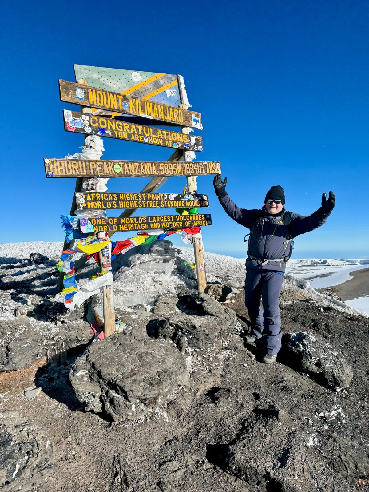

Darrell Seale became a certified scuba diving instructor in 1999. More than 25 years, 2,500 dives, and 300 certified students later, the Abu Dhabi-based instructor is still teaching, and his journey offers a clear picture of what a long career in dive instruction looks like.
Seale’s instructor credentials come from two established training agencies, PADI and SDI. Holding ratings with both has given him broad familiarity with how different agencies structure courses, assess skills, and set standards, knowledge that helps when students arrive with mixed training backgrounds or plan to continue their education elsewhere.
Building Experience One Dive at a Time
A logbook of more than 2,500 dives is built slowly. Each entry represents planning, a descent, time underwater, and a safe return, and an instructor’s count includes hundreds of training dives spent watching students rather than the reef. That repetition is where an instructor’s judgment comes from: recognizing early signs of stress, anticipating equipment problems, and knowing when conditions call for a change of plan.
Over the years, Seale has taught students at every stage, from nervous beginners in confined water to experienced divers adding new skills. Certifying more than 300 of them has reinforced a simple standard: a certification card should mean a diver can genuinely handle the dive it qualifies them for.
Teaching Through Clubs and Communities
Dive instruction has also given Darrell Ray Seale a way to build communities around the sport. From 2009 to 2014 he served on the board of the Lockheed Martin Dive Club, helping colleagues find training, dive buddies, and trips. During the same period he served on the board of Divers 4 Heroes and volunteered as an instructor with the organization.
In 2012 he co-founded Patriot Divers, a nonprofit that brings wounded and disabled veterans into the sport, work described in more detail in adaptive diving with Patriot Divers. These organizations turned individual teaching into something larger: programs that introduce many people to diving at once and keep them diving afterward.
Still Teaching in Abu Dhabi
Since relocating to the UAE in 2014, Seale has continued to teach scuba diving in Abu Dhabi, and retirement from his corporate career has left more time for instruction. Each course follows the principles he has used since 1999: safety first, thorough preparation, and respect for the marine environment.
That last principle is built into every lesson, as covered in a guide to reef-friendly diving habits. Travel to 142 countries has added new waters along the way, and he shares that journey as @nomad.darrell on Instagram.
Conclusion
A quarter century of instruction has not changed the core of Darrell Seale’s teaching: prepare carefully, dive within limits, and make every student a safer diver. The background behind that approach is set out in Darrell’s full biography.